Our new book is available. See Amazon or Springer pages for details!
The book provides an overview of the state-of-the-art of map construction algorithms, which use tracking data in the form of trajectories to generate vector maps. The most common trajectory type is GPS-based trajectories. It introduces three emerging algorithmic categories, outlines their general algorithmic ideas, and discusses three representative algorithms in greater detail.
To quantify map construction algorithms, the authors include specific datasets and evaluation measures. The datasets, source code of map construction algorithms and evaluation measures are publicly available on http://www.mapconstruction.org. The web site serves as a repository for map construction data and algorithms and researchers can contribute by uploading their own code and benchmark data.
This book is an excellent resource for professionals working in computational geometry, spatial databases, and GIS. Advanced-level students studying computer science, geography and mathematics will also find this book a useful tool.
Repository
This repository will provide access to
- a set of map construction algorithms,
- data sets including tracking data as well as respective map datasets, and
- various distance measures to assess the quality of the constructed maps.
As they become available, we encourage interested scientists and developers to add their source code to this site.
Citing the work
Should you use the source code and/or data from this site, please cite also the following paper:
M. Ahmed, S. Karagiorgou, D. Pfoser, and C. Wenk. A Comparison and Evaluation of Map Construction Algorithms. GeoInformatica, 19(3):601-632, 2015.
DOI: 10.1007/s10707-014-0222-6 - paper
Map Construction Algorithms
M. Ahmed and C. Wenk. Constructing street networks from GPS trajectories. In Proc. European Symp. on Algorithms, pages 60–71, 2012.
- paper
- presentation
- code - available in repository
J. Biagioni and J. Eriksson. Map inference in the face of noise and disparity. In Proc. 20th ACM SIGSPATIAL, pages 79–88, 2012.
- paper
- presentation
- code - available; download here
L. Cao and J. Krumm. From GPS traces to a routable road map. In Proc. 17th ACM SIGSPATIAL, pages 3–12, 2009.
- paper
- presentation
- code - re-implementation available; download here
J. J. Davies, A. R. Beresford, and A. Hopper. Scalable, distributed, real-time map generation. IEEE Pervasive Computing, 5(4):47–54, Oct. 2006.
S. Karagiorgou and D. Pfoser. On vehicle tracking data-based road network generation. In Proc. 20th ACM SIGSPATIAL, pages 89–98, 2012.
- paper
- presentation
- code - available in repository
S. Karagiorgou and D. Pfoser. Segmentation-Based Road Network Construction. In Proc. 21th ACM SIGSPATIAL GIS Conference, pp. 470-473, 2013.
- paper
- presentation
- code
Additional Algorithms
M. Aanjaneya, F. Chazal, D. Chen, Guibas, and D. Morozov. Metric graph reconstruction from noisy data. In Proc. 27th ACM Symp. on Comp. Geometry, pages 37–46, 2011.
G. Agamennoni, J. I. Nieto, and E. M. Nebot. Robust inference of principal road paths for intelligent transportation systems. Trans. Intell. Transport. Sys., 12(1):298–308, Mar. 2011.
R. Bruntrup, S. Edelkamp, S. Jabbar, and B. Scholz. Incremental map generation with GPS traces. In Proc. IEEE Intelligent Transp. Sys., pages 574 – 579, 2005.
C. Chen and Y. Cheng. Roads digital map generation with multi-track GPS data. In Proc. Workshops on Education Technology and Training, and on Geoscience and Remote Sensing, pages 508–511. IEEE, 2008.
D. Chen, L. Guibas, J. Hershberger, and J. Sun. Road network reconstruction for organizing paths. In Proc. ACM-SIAM Symp. on Discrete Algorithms, pages 1309–1320, 2010.
S. Edelkamp and S. Schrödl. Route planning and map inference with global positioning traces. In Computer Science in Perspective, pages 128–151. Springer, 2003.
A. Fathi and J. Krumm. Detecting road intersections from GPS traces. In Proc. 6th Int. Conf. on Geographic Information Science, pages 56–69, 2010.
X. Ge, I. Safa, M. Belkin, and Y. Wang. Data skeletonization via Reeb graphs. In 25th Annual Conf. on Neural Info. Proc. Sys., pages 837–845, 2011.
T. Guo, K. Iwamura, and M. Koga. Towards high accuracy road maps generation from massive GPS traces data. In IEEE Int. Geoscience and Remote Sensing Symp., pages 667–670, 2007.
X. Liu, J. Biagioni, J. Eriksson, Y. Wang, G. Forman, and Y. Zhu. Mining large-scale, sparse GPS traces for map inference: comparison of approaches. In Proc. 18th ACM SIGKDD, pages 669–677, 2012.
Evaluation Methods
Methods and algorithms to evaluate map construction results.
M. Ahmed, B.T. Fasy, K.S. Hickmann, C. Wenk. Path-Based Distance for Street Map Comparison. In ArXiv: 1309.6131, 2013.
- paper
- code - available in repository
S. Karagiorgou and D. Pfoser. On vehicle tracking data-based road network generation. In Proc. 20th ACM SIGSPATIAL, pages 89–98, 2012.
- paper
- code - available in repository
Data
GPS Trajectory Data
Athens Large
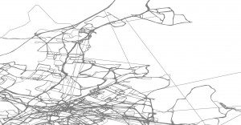{kind=link}
Athens Small
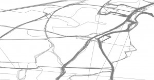{kind=link}
Berlin
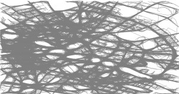{kind=link}
Chicago
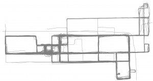{kind=link}
Map Construction Examples
Some map generation examples produced by respective algorithms:
Athens Large
Tracking data vs. road network
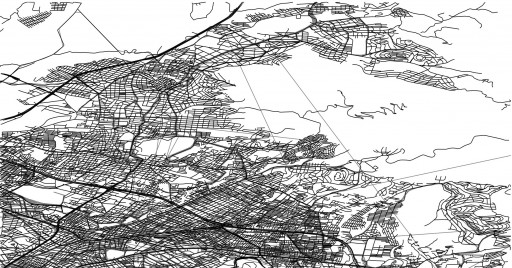{kind=link}
Ahmed
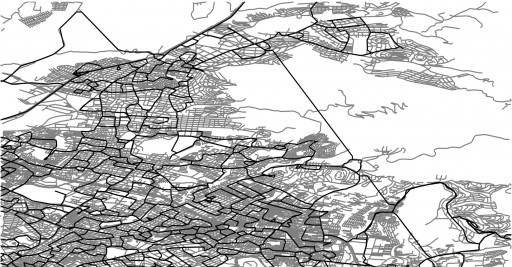{kind=link}
Karagiorgou
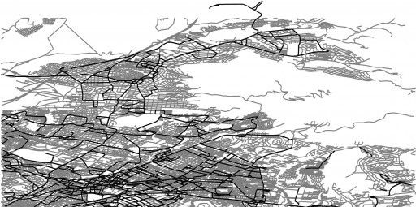{kind=link}
Berlin
Tracking data vs. road network
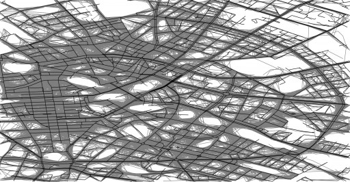{kind=link}
Ahmed
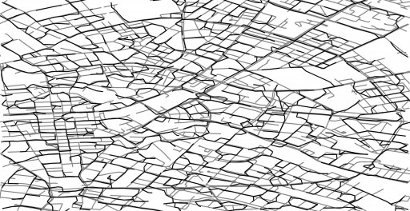{kind=link}
Karagiorgou
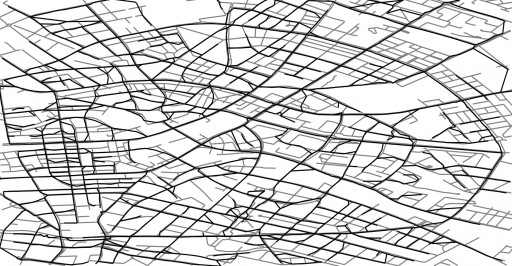{kind=link}
Chicago
Tracking data vs. road network
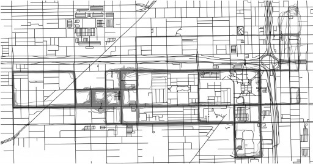{kind=link}
Ahmed
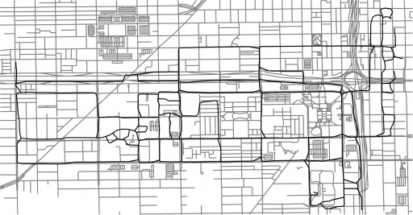{kind=link}
Karagiorgou
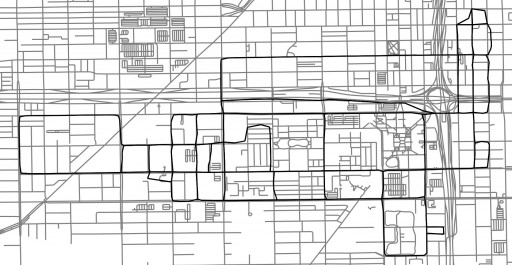{kind=link}
Biagioni
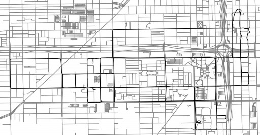{kind=link}
Edelkamp
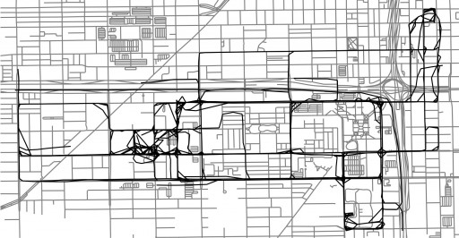{kind=link}
Davies

Cao
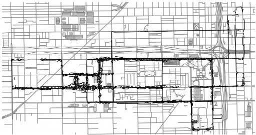{kind=link}
Contributors
Mahmuda Ahmed
University of Texas at San Antonio
San Antonio, TX, USA

Sophia Karagiorgou
Institute for the Management of Information Systems
Research Center "ATHENA"
Athens, Greece

Dieter Pfoser
George Mason University
Department of Geography and Geoinformation Science
4400 University Drive
Fairfax, VA 22032

Carola Wenk
Department of Computer Science
Tulane University